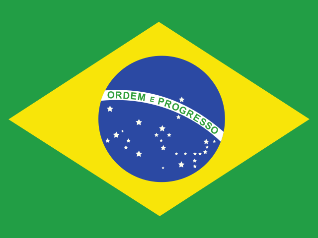

menos interface. mais jogo.
Fundo grafite, destaque amarelo e tipografia monoespaçada. Uma adaptação do tema Serika Dark para responder às cinco bandeiras.
Referência: código do Monkeytype, disponível localmente em design system. Componentes do jogo implementados em CSS próprio.
Cores
Base Serika Dark. Textos de ajuda e resultados ajustados para contraste no tema escuro.
Tipografia
Roboto Mono local, com alternativas Consolas e monospace. O jogo usa peso regular e tamanho para definir hierarquia.
Volta ao mundo.
Que países são estes?
Uma nova rodada
Digite o nome abaixo de cada bandeira.
Acentos e maiúsculas não alteram sua resposta.
Controles
Use Tab para testar o foco e digite diretamente nos campos. Exemplos visuais não enviam respostas.
Acentos são opcionais.
Acertou! Brasil.
Resposta correta: Brasil.
Espaçamento
Escala de 4 px. Grupos próximos, seções com espaço para respirar.

Painel discreto
Bordas de 1 px, raio de 12 px e preenchimento de 24 px. Use apenas quando o agrupamento ajudar a leitura.
Regras de interação
- Uma ação principal visível por etapa do jogo.
- Campos com altura mínima de 48 px e texto de 16 px.
- Foco visível e ordem de teclado igual à ordem de leitura.
- Mensagens de acerto e erro sempre incluem texto.
- As bandeiras preservam as cores originais; sem efeito bitmap.